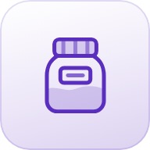
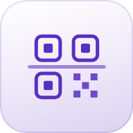
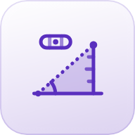

Hinweise
Diese Seite erklärt, was die Prüf- und Mess-Apps der WahrZentrale bewerten und wie ihre Ampel (rot/gelb/grün) zu verstehen ist.
WahrZentrale
Die gemeinsame Startseite aller Wahr-Apps.
Die gemeinsame Startseite aller Apps: „Heute“, Suche, Scanner, Sichern und Einstellungen. Der Scanner im Suchfeld erkennt Barcode, QR-Code, Kassenbon, Parkschein, Etikett oder Zutatenliste und schlägt die passende App vor. Im selben Suchfeld kannst du auch etwas eintragen: Die WahrZentrale schlägt vor, ob dein Text ein Gedanke, ein Beleg, ein Vorrat oder eine wiederkehrende Ausgabe ist – angelegt wird erst nach deinem Tipp in der jeweiligen App. „Hier merken“ hält deinen Standort als Parkplatz, Wegpunkt oder Reiseort fest. Den Aufbau der Startseite bestimmst du unter „Startseite anpassen“. Ein Impressum und eine Datenschutzerklärung gelten für alle Apps.
ProduktWahr
Zusatzstoffe, Kosmetik & Barcode – ein Check.
Ein Scan für alles: Zusatzstoffe (E-Nummern) und Kosmetik-Inhaltsstoffe (INCI) per Foto, Live-Text-Scan, Bild-Upload oder manueller Eingabe, dazu ein Barcode-Live-Scanner mit automatischer Abfrage bei Open Food Facts, Open Beauty Facts und Open Products Facts.
- Erkennt zusätzlich die 14 EU-Pflichtallergene
- Persönliches Allergie-/Unverträglichkeitsprofil mit automatischer Warnung
- Warenkorb-Modus beim Barcode-Live-Scan
- Favoriten, jederzeit über den Stern entfernbar
Die Ampel bei ProduktWahr
Gilt bei üblicher Verwendung und üblichen Mengen als gut untersucht. Individuelle Unverträglichkeiten sind trotzdem möglich.
Mit Einschränkung zu bewerten, z. B. bei Allergien, Unverträglichkeiten, hoher Aufnahmemenge oder bei Kindern. Näheres steht jeweils im Ergebnis-Detail.
In der EU eingeschränkt oder nicht mehr zugelassen, bzw. eine als bedenklich eingestufte Kategorie (z. B. hormonell wirksam, Mikroplastik).
Die Ampel-Bewertung ist eine allgemeine Orientierung auf Basis öffentlich zugänglicher Quellen (u. a. EFSA, ECHA, SCCS) und ersetzt keine ärztliche, ernährungswissenschaftliche oder kosmetische Fachberatung. Ein grüner Punkt bedeutet nicht automatisch "für jeden unbedenklich", ein fehlender Treffer bedeutet nicht automatisch "unbedenklich" – nur, dass der Stoff nicht in der jeweiligen Liste steht. Jedes Ergebnis zeigt zusätzlich, aus welchem Bereich der Treffer stammt: Zusatzstoffe (E-Nummern) oder Kosmetik-Inhaltsstoffe (INCI).

VorratsWahr
Vorrats-Überblick per Live-Scan.
Foto-basiertes Vorrats-Inventar für Gläser und Behälter mit eigenem, gedrucktem oder getipptem Klebelabel. Die Kamera erkennt den Label-Text automatisch, ganz ohne Auslöser; das Foto selbst wird danach nicht gespeichert.
- Frei wählbare, selbst gemerkte Kategorien statt festem Vorgabe-Set
- Durchsuchbare, alphabetisch sortierte Übersicht mit Kategorie-Filter
- Optionales Haltbarkeitsdatum: gelb markiert, wenn es innerhalb von 7 Tagen abläuft, rot, wenn bereits abgelaufen – solche Einträge stehen automatisch oben
- PDF-Export der aktuell angezeigten Liste
- Sichern/Wiederherstellen als Datei, rein lokal

QRWahr
Unabhängiger QR-Scanner.
Erkennt QR-Codes über die Kamera, rein lokal im Browser. Der erkannte Inhalt wird nur angezeigt – es gibt keine automatische Weiterleitung.
- Button "Extern öffnen" öffnet einen erkannten Link erst nach explizitem Tippen
- Button "Kopieren" für jeden erkannten Inhalt
- Keine Speicherung vergangener Scans, keine Verbindung zu den anderen Wahr-Apps
LautstärkeWahr
Der Lautstärke-Check.
Live-Messung der aktuellen Lautstärke über das Mikrofon (Web Audio API) – der Ton wird dabei nie aufgenommen, gespeichert oder übertragen, nur in Echtzeit im Browser analysiert.
- Scrollender Verlaufsgraph der letzten 60 Sekunden, Spitzenwert und Durchschnitt
- Frei einstellbarer Schwellenwert-Alarm mit Ton-/Vibrationshinweis
- Sitzungen mit Orts-Tag und Notiz im Verlauf speicherbar, nach Ort/Favoriten filterbar
- Wochen-Statistik im Vergleich zur Vorwoche
Die Ampel bei LautstärkeWahr
Allgemeine Orientierung, keine medizinische Beratung. Die gemessenen dB-Werte sind über das eingebaute Mikrofon geschätzt, keine geeichte Messung.

MessWahr
Höhe, Wasserwaage und Neigung.
Misst Höhen über die Kamera und den Lagesensor (Peilung von Fuß und Spitze, Kamerahöhe und Entfernung), dazu Wasserwaage und Neigungsmesser. Alles wird auf dem Gerät berechnet; das Kamerabild wird nur live angezeigt.
- Höhe mit Spanne für einen halben Grad Zielfehler
- Dosen- und Röhrenlibelle, Kalibrieren per Umschlagmessung
- Neigung in Grad, Prozent und als Verhältnis, Höhenunterschied auf eine Länge
Orientierungswerte, keine Vermessung und kein geeichtes Messgerät. Für Bauabnahmen, Gutachten und sicherheitsrelevante Arbeiten gelten die einschlägigen Regeln und geeichte Messgeräte.
KlangWahr
Töne sichtbar machen.
Klangbild (Wasserfall) und Spektrum, Stimmgerät nach dem YIN-Verfahren und ein Tongenerator von 20 Hz bis 20 kHz. Das Mikrofon wird nur live ausgewertet – nie aufgenommen, gespeichert oder übertragen.
- Stärkste Frequenzen mit Notenname, Klangschwerpunkt, Hinweis auf Netzbrummen
- Stimmgerät für Gitarre, Bass, Ukulele, Violine oder chromatisch, Kammerton 430–450 Hz
- „Momente“ merken: nur Zahlen und ein kleines Spektrum-Bild, kein Ton
Tongenerator: leise beginnen, vor allem mit Kopfhörern; die Lautstärke ist auf 50 % begrenzt. Der Frequenzlauf ist ein Experiment, kein Hörtest und keine medizinische Untersuchung. Pegelwerte sind unkalibriert.
HorizontWahr
Was ist das da hinten?
Beschriftet Türme, Kirchen, Orte, Berge, Leuchttürme, Burgen und Schlösser, Mühlen, Aussichtspunkte, Sehenswürdigkeiten sowie Hochhäuser und Flughäfen im Kamerabild – mit Entfernung, Richtung, Höhe und dem durch die Erdkrümmung verdeckten Teil. Die Umgebung wird auf Tipp aus OpenStreetMap geladen und danach auf dem Gerät gemerkt.
- Umkreis 5, 10, 20 oder 30 km, Arten frei wählbar
- „Ausrichten“ an einem bekannten Objekt gleicht Kompassfehler aus
- Liste nach Entfernung oder Richtung, durchsuchbar
Nicht zur Navigation geeignet. Kompass, OpenStreetMap-Daten und angenommene Höhen können abweichen. Daten © OpenStreetMap-Mitwirkende (ODbL), Geländehöhen Open-Meteo.com (CC BY 4.0).
Detaillierte Rechtsgrundlagen und Quellenangaben stehen im Impressum und in der Datenschutzerklärung der jeweiligen App.